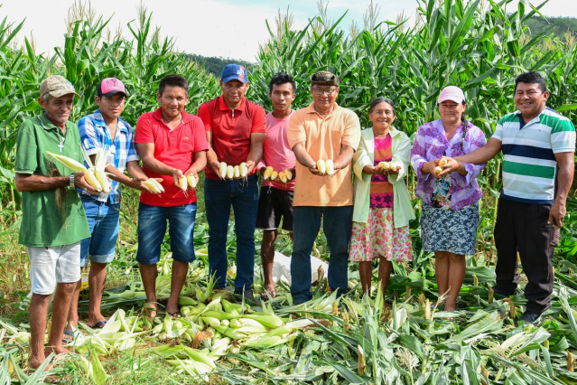
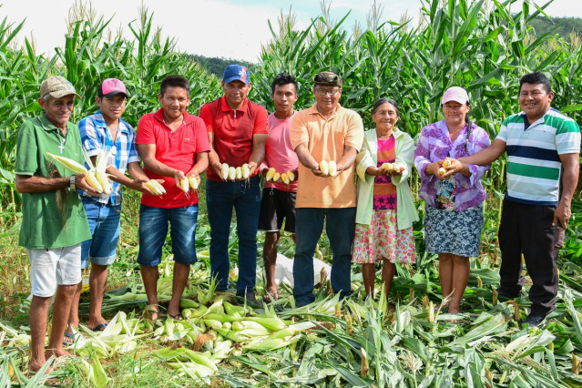

Sobre a Agricultura Sustentável
Nosso objetivo é promover técnicas agrícolas que respeitam o meio ambiente e a saúde das pessoas, valorizando a biodiversidade e a economia local.
Serviços Oferecidos
- Consultoria em técnicas agrícolas orgânicas
- Treinamentos em manejo sustentável
- Assistência na gestão agrícola e comercial
Galeria de Imagens
 


Contato
Para dúvidas ou mais informações, envie um email para: contato@agriculturasustentavel.com